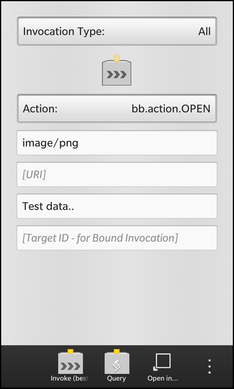
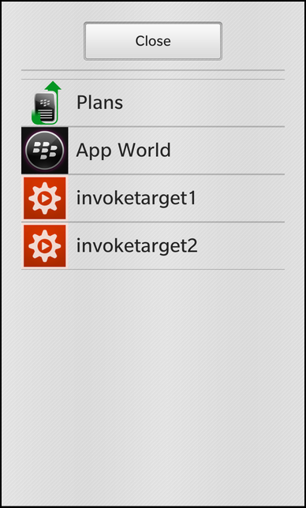
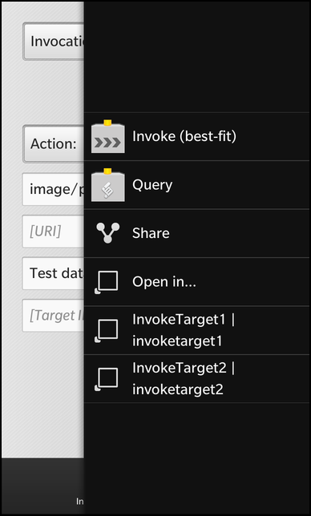

Files:
The Invoke Client example allows the user to invoke external applications in different ways.



In this example we'll learn how to use the InvokeManager and InvokeTarget classes of the BB10 framework to invoke external applications from within the invokeclient application.
All the business logic is encapsulated in the C++ class App, which is exported to the QML files under the name '_app'.
The UI of this sample application consists of two pages. On the first page are various input fields to let the user configure the parameters of an request. At the bottom of the page two actions are located to either invoke another application or to query all applications that a possible candidates for an invocation, depending on the current parameters.
If the user starts a query, a second page is pushed on the NavigationPane, which shows the result of the query inside a ListView. The user can click on the listed target applications to invoke them.
actions: [ ActionItem { title: qsTr ("Invoke (best-fit)") imageSource: "asset:///images/icon.png" ActionBar.placement: ActionBarPlacement.OnBar onTriggered: { _app.invoke() } }, ActionItem { title: qsTr ("Query") imageSource: "asset:///images/query.png" ActionBar.placement: ActionBarPlacement.OnBar onTriggered: { _app.query() } }, InvokeActionItem { ActionBar.placement: ActionBarPlacement.OnBar query { mimeType: "image/png" invokeActionId: "bb.action.OPEN" } }, InvokeActionItem { title: qsTr ("OpenImage1") ActionBar.placement: ActionBarPlacement.OnBar query { mimeType: "image/png" invokeActionId: "bb.action.OPEN" invokeTargetId: "com.example.bb10samples.invocation.openimage1" } }, InvokeActionItem { title: qsTr ("OpenImage2") ActionBar.placement: ActionBarPlacement.OnBar query { mimeType: "image/png" invokeActionId: "bb.action.OPEN" invokeTargetId: "com.example.bb10samples.invocation.openimage2" } } ]
The 'actions' property of the main page contains the two ActionItems to invoke an application or query for possible candidates. Whenever the user triggers one of these actions, the invoke() or query() method of the App object is called. These methods assemble a corresponding request and pass it to the bb::system::InvokeManager class, which will do the actual work.
Additionally the 'actions' property contains three InvokeActionItems, which are specialized ActionItems that trigger an invocation according to their configuration. In this example we add a general action to invoke the best matching application to open data with the mime type 'image/png', and two actions to invoke the specific applications 'invoketarget1' and 'invoketarget2'.
DropDown { horizontalAlignment: HorizontalAlignment.Fill title: qsTr ("Invocation Type:") Option { selected: true text: qsTr ("All") description: qsTr ("All types of invocation targets.") value: 0 } Option { text: qsTr ("Application") description: qsTr ("Targets that launch in a new window.") value: 1 } Option { text: qsTr ("Viewer") description: qsTr ("Targets that launch embedded.") value: 2 } Option { text: qsTr ("Service") description: qsTr ("Targets that launch in background.") value: 3 } Option { text: qsTr ("Card") description: qsTr ("Targets that embeds as Card.") value: 3 } onSelectedValueChanged: { _app.targetType = selectedValue } }
To configure the parameters of the invocation/query request, the main page contains various input fields, e.g. for the invocation type (All, Application, Viewer, Service) or the action type.
DropDown { id: actionSelector horizontalAlignment: HorizontalAlignment.Fill title: qsTr ("Action:") Option { selected: true text: qsTr ("All") description: qsTr ("Valid for queries only.") value: "__All" } Option { selected: true text: qsTr ("Menu Actions") description: qsTr ("Valid for queries only.") value: "__MenuActions" } Option { selected: true text: qsTr ("bb.action.OPEN") description: qsTr ("A menu action for opening content.") value: "bb.action.OPEN" } Option { text: qsTr ("bb.action.SET") description: qsTr ("A menu action for setting content as") value: "bb.action.SET" } Option { text: qsTr ("bb.action.SHARE") description: qsTr ("A menu action for sharing content.") value: "bb.action.SHARE" } Option { text: qsTr ("Custom") description: qsTr ("Specify a custom action.") value: "" } onSelectedValueChanged: { _app.action = selectedValue } }
Whenever the user changes one of the fields, the selected value is stored in the associated property of the App object.
TextField { hintText: qsTr ("[MIME Type]") text: "image/png" onTextChanging: { _app.mimeType = text } }
The main page also contains instances of the QueryResultSheet and ErrorDialog in its 'attachedObjects' property.
attachedObjects: [ QueryResultSheet {}, ErrorDialog {} ]
The ErrorDialog object is implemented in ErrorDialog.qml and inherits from the Dialog class to provide the functionality of a modal dialog. The error dialog is shown whenever an invocation operation reports some kind of error. For this, the App object provides the property 'errorMessage', which is bound against the 'text' property of the central Label inside the error dialog.
Label { horizontalAlignment: HorizontalAlignment.Center topMargin: 100 text: _app.errorMessage multiline: true }
To open the dialog whenever an error occurs, the custom JavaScript function handleErrorMessage() is bound against the errorMessageChanged() signal of the App object after the UI has been created. Inside this function the error dialog is opened if the current error message is not empty.
function handleErrorMessage() { if (_app.errorMessage != "") root.open() } onCreationCompleted: _app.errorMessageChanged.connect(handleErrorMessage)
The QueryResultSheet object is implemented in QueryResultSheet.qml and inherits from the Sheet class to provide the functionality of a modal sheet. The result sheet is shown whenever a target query has finished successfully, which is signaled by the App object via the emission of the queryFinished() signal. For this reason that signal is connected against the open() slot of the sheet object after the UI has been created.
onCreationCompleted: { _app.queryFinished.connect(root.open) _app.closeQueryResults.connect(root.close) }
The ListView inside the sheet uses the model of the App object as its data model and uses the 'label' and 'imageSource' property of the model entries for visualization. Whenever the user selects on item, the invokeTarget() method of the App object is called with the selected target name as parameter.
ListView { horizontalAlignment: HorizontalAlignment.Fill dataModel: _app.model listItemComponents: ListItemComponent { type: "item" StandardListItem { title: ListItemData.label imageSource: ListItemData.imageSource } } onTriggered: { _app.invokeTarget(dataModel.data(indexPath).name) } }
The App object is the mediator between the UI and the bb::system::InvokeManager class. In stores all the configuration values for an invocation or query request and makes them available to the UI through properties. The results of a target query are stored in a bb::cascades::GroupDataModel which can be used in the UI directly by a ListView.
class App : public QObject { Q_OBJECT // The properties to configure an invocation request Q_PROPERTY(int targetType READ targetType WRITE setTargetType NOTIFY targetTypeChanged) Q_PROPERTY(QString action READ action WRITE setAction NOTIFY actionChanged) Q_PROPERTY(QString mimeType READ mimeType WRITE setMimeType NOTIFY mimeTypeChanged) Q_PROPERTY(QString uri READ uri WRITE setUri NOTIFY uriChanged) Q_PROPERTY(QString data READ data WRITE setData NOTIFY dataChanged) Q_PROPERTY(QString target READ target WRITE setTarget NOTIFY targetChanged) // The model property that lists the invocation targets query results Q_PROPERTY(bb::cascades::GroupDataModel* model READ model CONSTANT) // The current error message Q_PROPERTY(QString errorMessage READ errorMessage NOTIFY errorMessageChanged) // The current status message Q_PROPERTY(QString statusMessage READ statusMessage NOTIFY statusMessageChanged) public: App(QObject *parent = 0); public Q_SLOTS: // This method is called to invoke another application with the current configuration void invoke(); // This method is called to query for all applications that can be invoked with the current configuration void query(); // This method is called to invoke a specific application with the given @p target id void invokeTarget(const QString &target); // This method clears the current error message void clearError(); Q_SIGNALS: // The change notification signals of the properties void targetTypeChanged(); void actionChanged(); void mimeTypeChanged(); void uriChanged(); void dataChanged(); void targetChanged(); void errorMessageChanged(); void statusMessageChanged(); // This signal is emitted if the query() call was successful void queryFinished(); // This signal is emitted to trigger a close of the query result sheet void closeQueryResults(); private Q_SLOTS: // This slot handles the result of an invocation void processInvokeReply(); // This slot handles the result of a target query void processQueryReply(); // This slot updates the status message if the user has started to peek an invoked card void peekStarted(bb::system::CardPeek::Type); // This slot updates the status message if the user has finished to peek an invoked card void peekEnded(); // This slot updates the status message when the invocation of a card is done void childCardDone(const bb::system::CardDoneMessage&); private: // The accessor methods of the properties int targetType() const; void setTargetType(int targetType); QString action() const; void setAction(const QString &action); QString mimeType() const; void setMimeType(const QString &mimeType); QString uri() const; void setUri(const QString &uri); QString data() const; void setData(const QString &data); QString target() const; void setTarget(const QString &target); bb::cascades::GroupDataModel* model() const; QString errorMessage() const; QString statusMessage() const; // The property values int m_targetType; QString m_action; QString m_mimeType; QString m_uri; QString m_data; QString m_target; bb::cascades::GroupDataModel* m_model; QString m_errorMessage; QString m_statusMessage; // The central object to manage invocations bb::system::InvokeManager* m_invokeManager; };
Inside the constructor the member variables are initialized with default values and the UI is loaded from the main.qml file.
App::App(QObject *parent) : QObject(parent) , m_targetType(0) , m_action(QLatin1String("bb.action.OPEN")) , m_mimeType(QLatin1String("image/png")) , m_model(new GroupDataModel(this)) , m_invokeManager(new InvokeManager(this)) { // Disable item grouping in the targets result list m_model->setGrouping(ItemGrouping::None); // Create signal/slot connections to handle card status changes connect(m_invokeManager, SIGNAL(childCardDone(const bb::system::CardDoneMessage&)), this, SLOT(childCardDone(const bb::system::CardDoneMessage&))); connect(m_invokeManager, SIGNAL(peekStarted(bb::system::CardPeek::Type)), this, SLOT(peekStarted(bb::system::CardPeek::Type))); connect(m_invokeManager, SIGNAL(peekEnded()), this, SLOT(peekEnded())); // Load the UI from the QML file QmlDocument *qml = QmlDocument::create("asset:///main.qml"); qml->setContextProperty("_app", this); AbstractPane *root = qml->createRootObject<AbstractPane>(); Application::instance()->setScene(root); }
Whenever the user triggers the 'Invoke' action, the invoke() method of the App object is called. Inside this method a new invoke request is created and configured with the current configuration values. If some configuration values are missing, an error is reported through the 'errorMessage' property.
void App::invoke() { // Create a new invocation request InvokeRequest request; // Setup the request properties according to the current configuration if (!m_action.isEmpty()) { if (m_action != QLatin1String("__All") && m_action != QLatin1String("__MenuActions")) { request.setAction(m_action); } else if (m_target.isEmpty()) { m_errorMessage = tr("[%1] is not a valid action type for an unbound invocation.").arg(m_action); emit errorMessageChanged(); return; } } if (!m_mimeType.isEmpty()) { request.setMimeType(m_mimeType); } else { m_errorMessage = tr("MIME type must be specified!"); emit errorMessageChanged(); return; } if (!m_uri.isEmpty()) request.setUri(m_uri); if (!m_data.isEmpty()) request.setData(m_data.toUtf8()); if (!m_target.isEmpty()) request.setTarget(m_target); // Start the invocation const InvokeReply *reply = m_invokeManager->invoke(request); if (reply) { // Ensure that processInvokeReply() is called when the invocation has finished QObject::connect(reply, SIGNAL(finished()), this, SLOT(processInvokeReply())); } else { m_errorMessage = tr("Invoke Failed! InvokeReply is empty."); emit errorMessageChanged(); return; } }
After the request has been created, the invoke() method of the bb::system::InvokeManager is called, which returns a bb::system::InvokeReply object. This object is a handle to monitor the progress of the invocation operation. The finished() signal of the reply object is connected against a custom slot to check for possible errors later on.
void App::query() { // Create a new query targets request InvokeQueryTargetsRequest request; // Setup the request properties according to the current configuration if (m_targetType == 0) request.setTargetTypes(InvokeTarget::Application | InvokeTarget::Card | InvokeTarget::Viewer | InvokeTarget::Service); else if (m_targetType == 1) request.setTargetTypes(InvokeTarget::Application); else if (m_targetType == 2) request.setTargetTypes(InvokeTarget::Viewer); else if (m_targetType == 3) request.setTargetTypes(InvokeTarget::Service); else if (m_targetType == 4) request.setTargetTypes(InvokeTarget::Card); if (!m_action.isEmpty()) { if (m_action == QLatin1String("__All")) request.setActionType(InvokeAction::All); else if (m_action == QLatin1String("__MenuActions")) request.setActionType(InvokeAction::Menu); else request.setAction(m_action); } if (m_mimeType.isEmpty() && m_uri.isEmpty()) { m_errorMessage = tr("MIME type OR URI must be specified!"); emit errorMessageChanged(); return; } if (!m_mimeType.isEmpty()) request.setMimeType(m_mimeType); if (!m_uri.isEmpty()) request.setUri(m_uri); // Start the query const InvokeReply *reply = m_invokeManager->queryTargets(request); // Ensure that processQueryReply() is called when the query has finished QObject::connect(reply, SIGNAL(finished()), this, SLOT(processQueryReply())); }
Whenever the user triggers the 'Query' action, the query() method of the App object is called. Inside this method a new query request is created and configured with the current configuration values. If some configuration values are missing, an error is reported through the 'errorMessage' property.
After the request has been created, the queryTargets() method of the bb::system::InvokeManager is called, which returns a bb::system::InvokeReply object. This object is a handle to monitor the progress of the invocation operation. The finished() signal of the reply object is connected against a custom slot to check for possible errors later on.
void App::invokeTarget(const QString &target) { // Setup the configuration to invoke the given target m_targetType = 0; m_target = target; emit closeQueryResults(); // Trigger the invocation invoke(); }
If the user has queried for possible invocation candidates and selects on entry from the result list view, invokeTarget() is called with the selected target name as parameter. Inside this method the configuration parameters are adapted and the invoke() method is called to continue the actual work.
void App::processInvokeReply() { // Get the reply from the sender object InvokeReply *reply = qobject_cast<InvokeReply*>(sender()); // Check for errors during invocation switch (reply->error()) { case InvokeReplyError::BadRequest: m_errorMessage = tr("[ErrorBadRequest] Invoke Failed!"); emit errorMessageChanged(); break; case InvokeReplyError::Internal: m_errorMessage = tr("[ErrorInternal] Invoke Failed!"); emit errorMessageChanged(); break; case InvokeReplyError::NoTarget: m_errorMessage = tr("[ErrorNoTarget] Invoke Failed!"); emit errorMessageChanged(); break; case InvokeReplyError::TargetNotOwned: m_errorMessage = tr("[ErrorTargetNotOwned] Invoke Failed."); emit errorMessageChanged(); break; default: break; } // Delete the reply later on reply->deleteLater(); }
After the invocation operation has finished, the processInvokeReply() slot is called, which reports errors to the UI if any occurred and deletes the reply object afterwards.
void App::processQueryReply() { // Get the reply from the sender object InvokeQueryTargetsReply *reply = qobject_cast<InvokeQueryTargetsReply*>(sender()); if (reply->error() == InvokeReplyError::None) { // If no error occurred ... // Clear the target result model m_model->clear(); // Iterate over the reported actions and targets foreach (const InvokeAction &action, reply->actions()) { foreach (const InvokeTarget &target, action.targets()) { // Add one entry to the model for each target QVariantMap entry; entry["label"] = target.label(); entry["name"] = target.name(); entry["imageSource"] = target.icon(); m_model->insert(entry); } } // Signal that the query was successful emit queryFinished(); } // Check for errors during invocation switch (reply->error()) { case InvokeReplyError::BadRequest: m_errorMessage = tr("[ErrorBadRequest] Query Failed!"); emit errorMessageChanged(); break; case InvokeReplyError::Internal: m_errorMessage = tr("[ErrorInternal] Query Failed!"); emit errorMessageChanged(); break; case InvokeReplyError::NoTarget: m_errorMessage = tr("[ErrorNoTarget] Query Failed!"); emit errorMessageChanged(); break; case InvokeReplyError::TargetNotOwned: m_errorMessage = tr("[ErrorTargetNotOwned] Query Failed."); emit errorMessageChanged(); break; default: break; } // Delete the reply later on reply->deleteLater(); }
After the query operation has finished, the processQueryReply() slot is called, which iterates over the returned actions and their targets and fills the model with them. Afterwards it reports errors to the UI if any occurred and deletes the reply object.